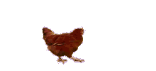
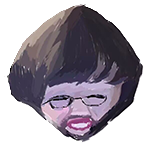

热门艺术展示
这里展示的是那个年代特有的设计风格，丰盛的彩色文字和夸张的布局让人回味无穷！
复古图片展示
复古链接和计数器
访问计数器：000123
免责声明
本网站仅供娱乐，所有设计均为90年代风格，重温网络初始年代的纯真与魅力。
| 主页 | 关于我们 | 联系我们 |
欢迎来到最丑陋的网站 |
|
这是一个早期互联网的实验。 使用奇异搞笑的风格：怪异布局，默认字体。 |
这里展示的是那个年代特有的设计风格，丰盛的彩色文字和夸张的布局让人回味无穷！
访问计数器：000123
本网站仅供娱乐，所有设计均为90年代风格，重温网络初始年代的纯真与魅力。
在这个特殊的网站中，你可体验到原汁原味的90年代互联网风格：炫目的动画、奇异的配色以及充满活力的滚动文本。虽然设计看似过时，但它却充满时代的魅力！
体验炫彩流光的文字效果，眩目到你不敢直视！点击这里，让你的每一次点击都充满惊喜和互动感！
这是一段充满奇思妙想的文字，它会不断变换颜色，仿佛梦境中的彩虹一般。快来感受这前所未有的视觉冲击吧！
